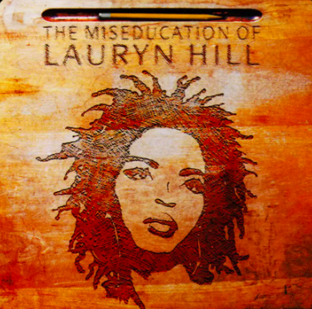

Lauryn Hill's "The Miseducation of Lauryn Hill" connects with me beyond the music. It was the words she'd said. In the song "The Miseducation of Lauryn Hill" in specific, her first words are "My world moves so fast today. The past seems so far away." To me it highlighted how I feel as a rising senior in highschool. I'm so close to the finish line, to graduation. But I'm too overwhelmed by the multitude of things I need to get done, and it makes me feel older and older when I realize how long ago I experienced the joys of just being a little girl, without requirements and expectations. I'd never felt so see within the words of a song before, and that's why I love this album.